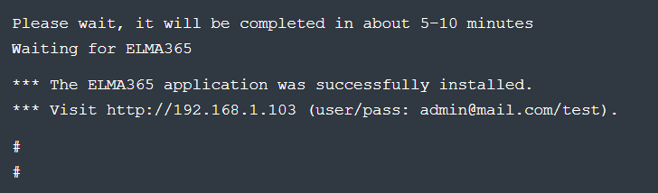

BRIX Standard edition can be installed on Kubernetes-in-Docker (KinD). This installation option is straightforward and allows you to run a local Kubernetes cluster using a Docker container node.
The installation consists of three steps:
- Prepare infrastrucure.
- Install Docker for your operating system.
- Download the installation script and fill in the configuration file.
- Run BRIX Standard installation script.
First read the BRIX On-Premises Standard system requirements.
Step 1: Prepare infrastructure
The infrastructure refers to the necessary components required for the operation of the BRIX On-Premises application:
- Docker
- PostgreSQL
- MongoDB
- RabbitMQ
- Redis
- S3 (MinIO)
начало внимание
It is assumed that the dependent components must be deployed by the customer independently. All tasks related to organizing a fail-safe local architecture and setting up the resilience of dependent components also remain the responsibility of the customer.
конец внимание
Built-in data storage components are suitable for demonstration purposes and in special cases for organizing testing and development platforms. If no connection parameters to external databases and S3 storage are specified in the additional installation settings, the built-in data storage components (PostgreSQL, MongoDB, RabbitMQ, Redis, MinIO) will be used automatically.
In the context of this article, the PostgreSQL database and S3 object storage will be external. For more details on how to deploy the database and object storage, read the articles: PostgreSQL and MinIO (S3).
Standard connection strings and passwords are used to connect to PostgreSQL and MinIO (S3).
Step 2: Install Docker
Install Docker for your operating system.
начало внимание
Please be aware that KinD does not support creating a Kubernetes cluster with Cgroups v2. Refer to the documentation for possible errors.
конец внимание
Step 3: Download the installation script and fill in the configuration file
Upon the first run, the installation script will create a configuration file named config-elma365.txt in the directory from which it was executed.
- Download and run the BRIX installation script to create a configuration file by executing the following command:
sudo curl -fsSL -o elma365-docker.sh https://dl.elma365.com/onPremise/latest/elma365-docker-latest && \
sudo chmod +x elma365-docker.sh && \
sudo ./elma365-docker.sh
Download links for other BRIX versions are provided in Links for downloading BRIX distribution packages.
начало внимание
To create a new default configuration file, rename the existing configuration file config-elma365.txt and run the installation script with the --new-config flag.
конец внимание
- Make changes to the configuration file
config-elma365.txtprepared with the installation script.
- For a quick start with BRIX Standard, uncomment and fill in the necessary variables.
Filling in the main parameters in the configuration file config-elma365.txt may look like the following:

Where:
ELMA365_HOST=192.168.1.103is the IP address of the host machine through which the BRIX Standard application will be accessible. For details on creating a FQDN, refer to Modify BRIX Standard parameters.ELMA365_EMAIL=admin@mail.comis the administrator's email address.ELMA365_PASSWORD=testis the administrator's password.ELMA365_LANGUAGE=en-USis the language of the installed system.
начало внимание
If Docker is installed via Snap, you need to uncomment and change the paths to folders/directories for the parameters: ELMA365_INSTALL_DIR, ELMA365_BACKUP_DIR, for example:
ELMA365_INSTALL_DIR=/mnt/elma365/docker.ELMA365_BACKUP_DIR=/mnt/elma365/backup.
конец внимание
- Set up connection to external databases and S3 object storage.
Important: Built-in data storage components are suitable for demonstration purposes and, in special cases, for organizing testing and development platforms. If no connection parameters to external databases and S3 storage are specified in the additional installation settings, the built-in data storage components (PostgreSQL, MongoDB, RabbitMQ, Redis, MinIO) will be used automatically.
To connect to the external PostgreSQL database, uncomment and fill in the ELMA365_DB_PSQL, parameter by specifying the connection string obtained during the installation of PostgreSQL in step 6.
Uncomment and set the following parameters for connecting to S3:
ELMA365_DB_S3_ADDRESS,ELMA365_DB_S3_BUCKET,ELMA365_DB_S3_USER,ELMA365_DB_S3_PASSWORD,ELMA365_DB_S3_REGION,ELMA365_DB_S3_METHOD,ELMA365_DB_S3_SSL. Connection parameter values will be obtained during the installation of MinIO (S3) in step 10;- Set the
ELMA365_DB_S3_GATEWAYarameter totrueto enable proxying connections to S3 through BRIX.
Filling in connection variables to the proxy server
To use your proxy server for the installation and operation of BRIX Standard, uncomment and fill in the variables in the section Example for # ------------------------------------------------------------- # -------------------------------------------------------------
Where:
Make sure that the |
For more information on config-elma365.txt configuration file parameters, refer to Modify BRIX Standard parameters.
Step 4: Run BRIX Standard installation script
The volume of downloaded files during BRIX Standard installation is approximately 4-5 GB, and the installation time is around 10-15 minute.
- Run the downloaded installation script:
sudo ./elma365-docker.sh
Once installation is complete, a message about the successful installation of the BRIX Standard application will be displayed in the script.

- Launch the browser and open the BRIX Standard application login page at
http://ELMA365_HOST. TheELMA365_HOSTparameter was specified in theconfig-elma365.txtfile on the Download the installation script and fill in the configuration file step.
In the provided example, the following application login page address is used: http://192.168.1.103.

- For login, use the administrator’s email address and the password that was used in the
config-elma365.txtconfiguration file under the parametersELMA365_EMAILandELMA365_PASSWORD.
In the provided example, they are::
- Login: admin@mail.com.
- Password: test.
- Click the Sign In button.
The BRIX system activation window will open.
- Activate the system. For more details, see Activate On-Premises.
The installation of BRIX Standard has been successfully completed.
Начало внимание
Save the config-elma365.txt file for future updates.
Конец внимание